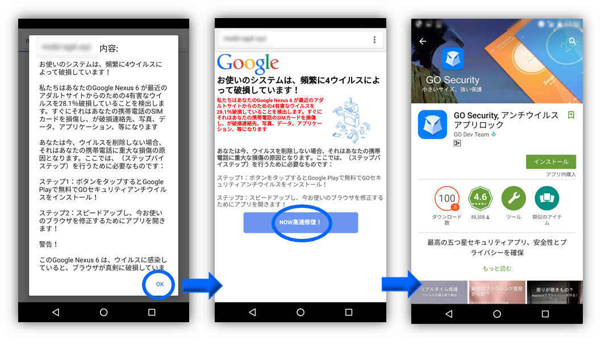
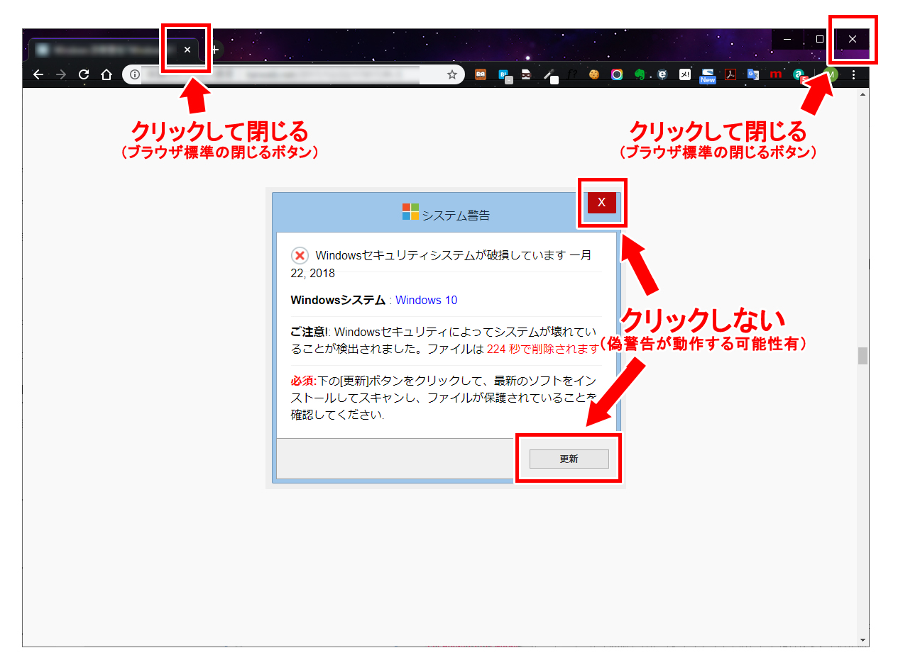

セキュリティソフト等の偽警告
概要
突然、「あなたのスマートフォン（パソコン）がウイルスに感染しています！今すぐセキュリティソフトをインストールしましょう！」という偽の警告画面（フェイクアラート）が表示される詐欺です。これは偽警告と呼ばれ、偽のセキュリティソフトをインストールをさせることで個人情報や有料契約を狙っています。他にも、「性能が低下しています」「ディスクの空き容量がありません」など警告文は様々です。

出典：IPA(情報処理推進機構) 「安心相談窓口たより」
手口
上述のように、実際の警告画面に近い偽の画面を突如として表示することで、ユーザの不安を煽り、冷静な判断力を低下させます。画面の指示通りにソフトをインストールしたり、画面内の電話番号へ問い合わせてしまうと、個人情報の流出や、有料のソフトやサポート契約を強いられる原因になります。また、ネット広告と、その広告を表示させているWebサイトは完全に別の仕組みで動作している場合があります。そのため、Webサイト自体が安全だからといって安心できるわけではありません。
対策
最も良い手段は、無視することです。偽警告で表示されたようなウイルス感染や不具合などは実際には起きていないので、気にせず無視しましょう。この際、下の画像のように、偽警告の画面に触れないよう、ブラウザのタブ、もしくはブラウザ自体を終了しましょう。

出典：CyberSecurity.com 「偽警告とは？仕組みや種類、セキュリティ対策について徹底解説」
また、自身が使用しているセキュリティソフトの警告画面を知っておくと、偽物だという事がすぐに見抜けるはずです。実際の警告画面では、ユーザの不安を煽るような行為はされないので、焦らず冷静になることが重要です。なお、偽警告のプログラムはグレーウェア（不利益をもたらすが不正とは言い切れないもの）に分類される場合があるため、ウイルス検出ソフトでスキャンして問題が無かったからと言って、100%安全と断言できるわけではないので注意してください。
実際に起きた事件
長崎新聞 「「サポート詐欺」注意 長崎県内女性2人が被害 ウイルス感染の偽警告」
高知新聞 「ＰＣに｢ウイルス感染｣の偽警告 ６月県内で５人計６４万円被害」